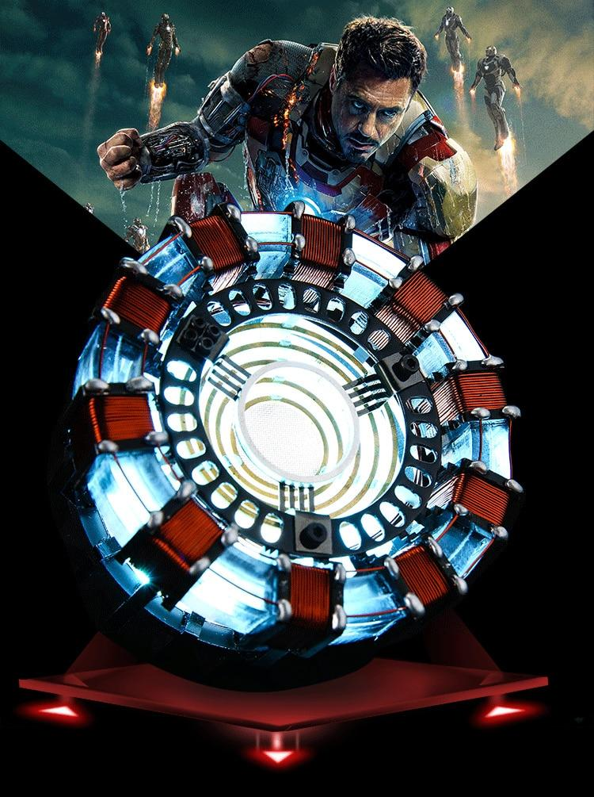
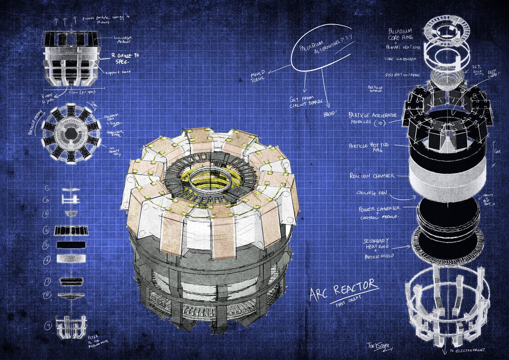
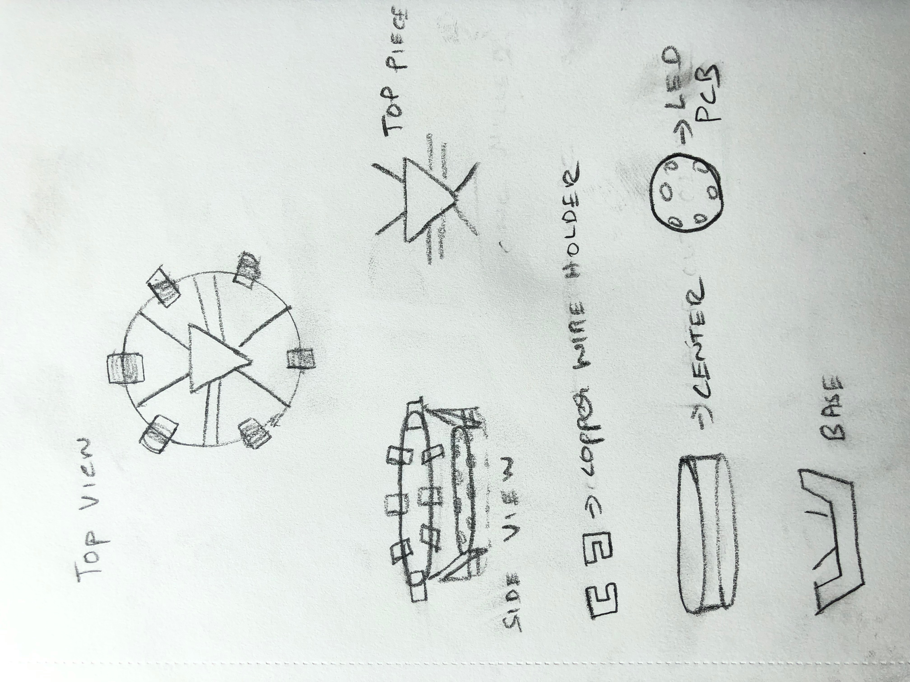

Fabrication of the original ARC Reactor from the Iron-Man movies. This model will also function as a lamp/flashlight.
The design has multiple layers and thus will be fabricated using different techniques.

Rudimentary sketches of my design.

The top piece will be CNC milled/3D printed( I will do both to decide which material suits the design better). The center piece will be laser cut with delrin or Acrylic. 2-piece box structures will be CNC milled and attached to the center layer. Copper wire would then be rolled onto these pieces.
A circular layer will be CNC milled to accommodate the mini Flash LEDs, this layer will be the 3rd layer of the structure. Finally, the base/last layer will be 3d printed.
The files will be designed in Rhino-Grasshopper and Illustrator.
1. Flash LEDs
2. Delrin/Acrylic
3.PLA Filament
4. FR1 and FR4
5. Copper Gauge
6. Misc tools
The materials will be bought from the Mill or AMAZON.